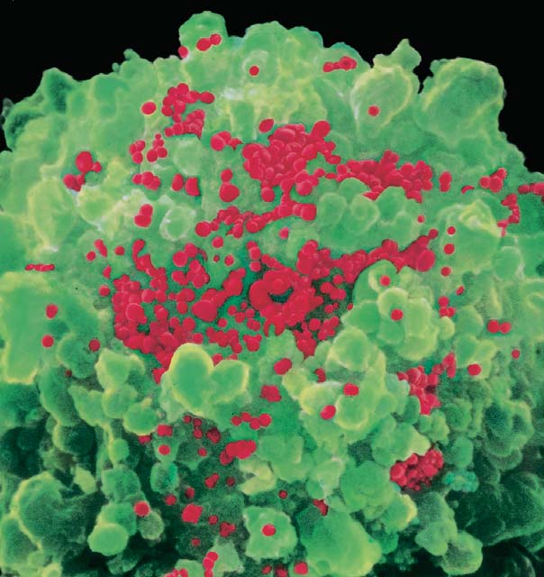
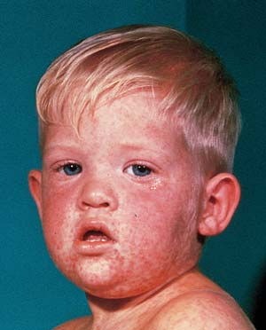

24 Virus y agentes subvirales
501
CONCEPTOS CLAVE
24.1 Un virus es una pequeña partícula que consiste de un núcleo de ácido nucleico rodeado por un recubrimiento proteico; para poder reproducirse, un virus debe infectar una célula viva. 24.2 Los virus pueden clasifi carse con base en su rango de huéspedes, qué tipo de ácido nucleico tienen y si el ácido nucleico es de una cadena o de dos cadenas. 24.3 En un ciclo reproductivo lítico, un virus usa la maquinaria molecular de la célula huésped para replicarse y destruye la célula huésped en el proceso; en un ciclo lisogénico, el genoma viral se integra en el ADN huésped y entonces se llama “provirus”. 24.4 Los virus infectan las células de todo tipo de organismos; causan serias enfermedades en plantas y animales. 24.5 De acuerdo con la hipótesis del origen celular, los virus pudieron originarse como elementos genéticos móviles igual que los transposones o plásmidos. 24.6 Los agentes subvirales, que incluyen satélites, viroides y priones, son más pequeños y más simples que los virus.
A
fi nales del siglo xix, los botánicos buscaban la causa de la enfermedad llamada mosaico del tabaco, que impedía el crecimiento de las plantas de tabaco y daba a las hojas infectadas una apariencia manchada, como de mosaico. Descubrieron que podían transmitir esta enfermedad a plantas sanas al impregnar sus hojas con la savia de las plantas enfermas. En 1892, Dmitri Ivanowsky, un botánico ruso, demostró que la savia todavía era infecciosa después de pasarla por fi ltros de porcelana diseñados para retener todas las bacterias conocidas. Pocos años después, en 1898, Martinus Beijerinck, microbiólogo holandés, proporcionó evidencia de que el agente causante de la enfermedad del mosaico del tabaco tenía muchas características de un organismo viviente. Sin embargo, parecía que el agente infeccioso sólo podía reproducirse dentro de una célula viva. Beijerinck llamó al agente infeccioso virus (de la palabra latina virus , que signifi ca “veneno”). El virus del mosaico del tabaco fue el primero de su clase en ser reconocido. A principio del siglo xx los científi cos descubrieron otros agentes infecciosos, como los responsables del mosaico del tabaco, que podían causar enfermedades en animales o matar bacterias. Tales patógenos eran tan pequeños que no podían verse con un microscopio óptico. También
Esta micrografía a color obtenida con un microscopio electrónico de barrido muestra el virus de inmunodefi ciencia humana (VIH; rojo ) que infecta una célula auxiliar T (una célula del sistema inmunológico; verde ).
NIBSC/Science Photo Library/Photo Researchers, Inc.

502 Capítulo 24
pasaban a través de fi ltros que removían todas las bacterias conocidas. Curiosamente, no podían crecer en cultivos de laboratorio a menos que estuvieran presentes en células vivas. El desarrollo del microscopio electrónico en la década de 1930 hizo posible ver virus por primera vez. La mayoría de los virus que infectan animales, plantas y bacterias se identifi caron durante la segunda mitad del siglo xx. Los virus causan muchas enfermedades en las plantas y son responsables de la pérdida de miles de millones de dólares en cosechas cada año. Quizá el lector esté familiarizado con algunas de las muchas enfermedades virales humanas, incluidas infl uenza, viruela, rubéola (sarampión alemán), parotiditis, rabia, poliomielitis, herpes y síndrome de inmunodefi ciencia adquirida (SIDA; vea la fi gura). Los virus son los microorganismos más numerosos de la Tierra e infl uyen en muchos procesos ecológicos. Por ejemplo, matan grandes cantidades de biomasa marina cada día, con lo que contribuyen signifi cativamente al reciclaje de nutrientes. Los virus se adaptan a sus ambientes mediante evolución. También infl uyen en la biodiversidad de otros organismos. Los virus pueden transferir sus genes hacia el material genético de sus huéspedes. También pueden transferir genes eucariotas de un organismo a otro y cruzar las fronteras entre las especies. En este capítulo el lector examinará las características y diversidad de los virus, y los más pequeños agentes subvirales: viroides y priones. Los virus se incluyen en la unidad de Biología porque tienen algunas características de las cosas vivientes y porque impactan a todos los organismos vivos.
24.1 CATEGORÍA Y ESTRUCTURA DE LOS VIRUS
OBJETIVOS DE APRENDIZAJE
1 Contrastar un virus con un organismo celular. 2 Describir la estructura de un virus.
Un virus es un agente infeccioso muy pequeño que consiste de un centro de ácido nucleico y depende de un huésped vivo. El estudio de los virus se llama virología y los biólogos que estudian a los virus son virólogos . La mayoría de los biólogos ven a los virus como partículas no vivientes porque no están compuestos de células y no pueden realizar actividades metabólicas o reproducirse por cuenta propia. No tienen los componentes necesarios para realizar respiración celular o para sintetizar proteínas y otras moléculas. Los virus no contienen los ácidos nucleicos necesarios para realizar copias de sí mismos, se replican al invadir células vivas y tomar el control de su maquinaria metabólica. Para multiplicarse, un virus debe infectar una célula en la que pueda replicarse. Por ende, los virus son parásitos intracelulares obligados ; sólo sobreviven usando los recursos de una célula huésped , la que el virus invade. Los virus infectan a todo tipo de organismos, incluidos bacterias, arqueas, protistas, plantas, hongos y animales. Algunos virus incluso infectan a otros virus. Es interesante que los virus evolucionen mediante selección natural. Por estas razones, la mayoría de los biólogos consideran que los virus están en el borde de la vida, aunque algunos argumentan que se trata de formas de vida muy simple.
Los virus son muy pequeños
Como lo reportaron los primeros investigadores, los virus son muy pequeños. La mayoría varía en tamaño desde 20 hasta 300 nm. (Un nanómetro es una milésima de micrómetro). El poliovirus tiene alrededor de 30 nm de diámetro (más o menos el tamaño de un ribosoma). Si pudieran alinearse estos virus extremo con extremo, ¡se requeriría casi un millón de ellos para abarcar una pulgada! Un virus más grande, como el poxvirus que causa viruela, puede medir hasta 300 nm de largo y 200 nm de ancho. El virus conocido más grande es el mimivirus, con un diámetro de más o menos 400 nm, el tamaño de una pequeña bacteria (micoplasma). El mimivirus, descubierto en 2003, infecta a las amibas.
Un virus consiste de ácido nucleico rodeado por un recubrimiento proteico
El centro de ácido nucleico del virus está rodeado por un recubrimiento proteico llamado cápside . Los microbiólogos usan el término virión para referirse a la partícula virus completa que está afuera de una célula huésped . El virión es la forma en la que el virus se mueve desde la célula donde se produjo hasta una nueva célula huésped en la que pueda replicar su genoma. Sin embargo, en este libro se usará el término virus en un sentido amplio, aun cuando se haga referencia a viriones. Un virus típico contiene o ácido desoxirribonucleico (ADN) o ácido ribonucleico (ARN), pero no ambos. El ácido nucleico puede ser de una sola cadena o de doble cadena. Por tanto, un virus puede ser de una sola cadena (cs, cadena simple), ADN de doble cadena (cd, por cadena doble), ARNcs o ARNcd. Como se analizará, el tipo de ácido nucleico es importante para clasifi car a los virus. El genoma viral suele consistir de 5000 a más de 100,000 bases o pares de bases (dependiendo de si es de una sola cadena o de dos cadenas). De nuevo, el mimivirus es una excepción. Los investigadores secuenciaron el genoma del mimivirus y reportaron que este gran virus de ADN de dos cadenas tiene más de un millón de pares de bases. El mimivirus también tiene seis ARN de transferencia.
El cápside es un recubrimiento proteico protector
El cápside consiste de subunidades proteicas, llamadas capsómeros . Los capsómeros determinan la forma del virus. Por lo general los cápsides son o helicoidales o poliédricos, o una combinación de ambas formas. Los virus helicoidales, como el virus del mosaico del tabaco (VMT), parecen largas barras o hilos ( FIGURA 24-1a ). Su cápside es un cilindro hueco constituido de proteínas que forman un surco donde encaja el ARN. Los virus poliédricos, como los adenovirus (que causan varias enfermedades humanas, incluidas algunas infecciones respiratorias), parecen un poco esféricos ( FIGURA 24-1b ). Sus capsómeros están organizados en triángulos equiláteros. El cápside de un virus grande puede consistir de varios cientos de capsómeros. La estructura poliédrica más común es un icosaedro , una estructura con 20 caras superfi ciales idénticas (cada cara es un triángulo). El virus de inmunodefi ciencia humana (VIH) que causa el Síndrome de Inmunodefi ciencia Adquirida (SIDA) es un virus con envoltura. Las proteínas en la envoltura se extienden hacia afuera como espículas ( FIGURA 24-1c ). Algunos virus tienen componentes tanto helicoidales como poliédricos. Los virus que infectan bacterias se llaman bacteriófagos o simplemente fagos ( FIGURA 24-1d ). El fago T4 que infecta a la bacteria
Virus y agentes subvirales 503
membrana plasmática del huésped. Por tanto, la envoltura viral consiste de fosfolípidos y proteínas de la membrana plasmática del huésped, así como de proteínas distintivas producidas por el mismo virus. Algunos virus producen proteínas de envoltura que sobresalen de esta última como espículas. Como estudiará más adelante, dichas espículas pueden ser muy importantes en la interacción del virus con la célula huésped.
Repaso
■ ¿Qué características de la vida están ausentes en un virus?
■ ¿Cuáles son los componentes estructurales de un virus?
Escherichia coli consiste de una “cabeza” poliédrica unida a una “cola” helicoidal. Muchos fagos tienen esta forma y muchos otros también tienen fi bras de cola que se adhieren a la célula huésped.
Algunos virus están rodeados por una envoltura
Algunos virus, llamados virus envueltos , tienen una envoltura membranosa externa que rodea al cápside. Por lo general, el virus adquiere la envoltura a partir de la membrana plasmática de la célula huésped conforme la deja ( FIGURA 24-2 ). Es interesante que mientras está dentro de la célula huésped, el virus sintetiza ciertas proteínas y las inserta en la
200 nm
ARN dentro de cápside
Cápside
Capsómeros
- Micrografía obtenida con un microscopio electrónico de transmisión (MET) del virus del mosaico del tabaco. Este virus tiene forma de barra con un arreglo helicoidal de proteínas como cápside.
© Dennis Kunkel Microscopy, Inc./Visuals Unlimited/Corbis
Biozentrum/Science Photo Library/ Photo Researchers, Inc.
Cápside con proyecciones proteicas en forma de antena
ADN dentro de cápside
50 nm
- Micrografía MET coloreada de un adenovirus. El cápside está compuesto de 252 subunidades (visibles como pequeños óvalos) ordenados en poliedros de 20 lados. Doce de las subunidades tienen proyecciones proteicas que le permiten al virus reconocer las células huésped.
© Dr. Klaus Boller/Photo Researchers, Inc.
50 nm
- Micrografía MET coloreada del VIH, el virus que causa el SIDA. El virus deja una célula huésped ( rosa ). El virus está encerrado en una envoltura ( verde ) obtenida de la membrana plasmática del huésped. Desde la envoltura se proyectan proteínas virales. El cápside del virus se muestra en amarillo.
ARN
Proteína de envoltura Envoltura
Cápside Enzimas
© Department of Microbiology, Biozentrum, University of Basel/Photo Researchers, Inc.
100 nm
- Micrografía MET coloreada del bacteriófago T4. Este virus tiene cabeza poliédrica y cola helicoidal. El virus se adhiere a la pared celular del huésped bacterial mediante sus fibras de la cola.
ADN dentro de cápside
Cápside Cola
Fibras de la cola
ADN que sale
FIGURA 24-1 Animada La estructura de un virus Un virus consiste de un núcleo de ADN o ARN rodeado por un recubrimiento de proteína llamado cápside, el cual está compuesto de subunidades de proteína llamadas capsómeros. Algunos virus tienen una envoltura membranosa que rodea el cápside.
504 Capítulo 24
nal sistema de clasifi cación de Linneo; no asigna los virus a dominios, reinos o fi los. El sistema de clasifi cación de Baltimore clasifi ca los virus con base en el tipo de ácido nucleico que contienen, ya sea que el ácido nucleico sea de una sola cadena o de dos cadenas, y en cómo producen ARNm. Otros rasgos considerados en la clasifi cación viral son el tamaño y la forma del virus, la presencia de envoltura, y el método mediante el cual se transmite el virus de huésped a huésped.
Repaso
■ ¿Cuáles son las tres características empleadas para clasifi car virus?
24.2 CLASIFICACIÓN DE LOS VIRUS
OBJETIVO DE APRENDIZAJE
3 Identifi car tres características empleadas para clasifi car virus.
Los virus presentan un reto taxonómico para los biólogos porque no tienen las características que defi nen a los organismos vivos (vea el capítulo 1). Son acelulares, no realizan actividades metabólicas y sólo se reproducen al tomar el control de la maquinaria reproductiva de otras células. Los virus no fabrican proteínas y por tanto no tienen ARNr distintivo. Por estas razones, los virus no se clasifi can en alguno de los tres dominios. Los virus pueden clasifi carse con base en su rango de huéspedes , los tipos de organismos que infectan. Se les puede referir como virus de plantas, virus de animales, virus bacteriales, etcétera. Los virus se clasifi can de manera más formal en taxones de especies a órdenes. El Comité Internacional de Taxonomía de Virus (ICTV por sus siglas en inglés), un grupo de virólogos, decide los criterios específi cos para clasifi car y nombrar virus. Recientemente, con base en el rango de huéspedes y otras características, el ICTV clasifi có los virus en 5 órdenes, 84 familias, 307 géneros y más de 2000 especies. Los nombres de las familias de virus incluyen el sufi jo -viridae . Observe que éste no es un tradicio-
Ácido nucleico
Virus desnudo
Virus envuelto
Capsómeros
Envoltura
Proyecciones proteicas
Célula huésped
Membrana plasmática de célula huésped
Glicoproteínas producidas por el virus
FIGURA 24-2 Comparación de virus desnudo y envuelto Al dejar el virus la célula huésped, la membrana de plasma del huésped rodea al virus formando una envoltura. Ésta contiene proteínas producidas por el virus.


Virus y agentes subvirales 505
nucleico viral y elaborar las proteínas que necesitan. Toman el control de los mecanismos de transcripción y traducción de la célula huésped.
Los bacteriófagos infectan bacterias
Gran parte del conocimiento de los virus proviene del estudio de los bacteriófagos (“comedores de bacterias”), a los que de manera más simple se les conoce como fagos . Estos virus pueden cultivarse con facilidad dentro de bacterias vivas en el laboratorio. Los microbiólogos han identifi cado más de 2000 fagos. Los bacteriófagos están entre los virus más complejos (vea la fi gura 24-1d). Su estructura más común consiste de una gran molécula de ácido nucleico (por lo general ADNcd) enrollado dentro de una cabeza poliédrica. La mayoría tiene una cola que puede ser contráctil y funcionar en la penetración de la célula huésped. Antes de la era de los medicamentos sulfas y los antibióticos, los fagos se usaban clínicamente para tratar infecciones. En la década de 1940 se abandonaron (al menos en los países occidentales) en favor de los antibióticos, que eran más confi ables y más fáciles de usar. Ahora, con la dispersión y el creciente problema de la resistencia bacteriana a los antibióticos, estos virus asesinos de bacterias están nuevamente en el foco de investigación. Con el nuevo conocimiento de los fagos y tecnologías avanzadas, muchos grupos de investigación estudian a los fagos para determinar a cuáles especies de bacterias matan. Los científi cos modifi can genéticamente a los fagos de modo que las bacterias desarrollen más lentamente resistencia hacia ellos. Los fagos también pueden usarse para mejorar la seguridad de los alimentos. Por ejemplo, ciertos fagos pueden matar cepas mortales de E. coli en ganado. Esta bacteria no parece enfermar al ganado, pero puede causar patologías y matar a personas que coman hamburguesas contaminadas mal cocinadas.
Los virus se replican dentro de las células huésped
Los virus infectan células bacterianas, vegetales y animales en formas básicamente similares. En este texto el enfoque se centra en la infección de bacterias por fagos, dado que este proceso se entiende mejor. El ciclo reproductivo del virus comienza cuando éste entra en contacto con una célula huésped. Por lo general, el virus se fi ja a la superfi cie de la célula huésped. El ácido nucleico viral debe entrar en la célula huésped y sintetizar los componentes que necesita para reproducirse. Luego, los componentes virales se ensamblan y los virus se liberan de la célula, listos para invadir a otras células. Los dos tipos de ciclos reproductivos virales son el ciclo lítico y el lisogénico.
Los ciclos reproductivos líticos destruyen a las células huésped
En un ciclo lítico , el virus le ocasiona lisis (destrucción) a la célula huésped. Cuando el virus infecta una célula huésped susceptible, la fuerza a usar su maquinaria metabólica para replicar partículas virales. Los virus que sólo tienen un ciclo lítico se describen como virulentos , lo que signifi ca que causan enfermedad y con frecuencia la muerte. En la reproducción viral lítica son usuales cinco pasos ( FIGURA 24-3 ):
- Fijación (o adsorción). El virus se fi ja a receptores específi cos en la célula huésped. Este proceso garantiza que sólo infecte a su huésped específi co. 2. Penetración. El virus penetra la membrana plasmática del huésped y se mueve hacia el citoplasma. Muchos virus que infectan células animales entran intactos a la célula huésped. Algunos fagos sólo inyectan su ácido nucleico en el citoplasma de la célula huésped; el cápside permanece en el exterior.
Los virus se reproducen al tomar el control de la maquinaria metabólica de una célula huésped. La célula huésped se destruye en una infección lítica.
- Secuencia de eventos en una infección lítica.
ADN bacterial
Liberación. A la célula bacterial le ocurre lisis y libera muchos fagos que entonces pueden infectar a otras células.
Ensamblaje. Los componentes del fago se ensamblan en nuevos virus.
Replicación y síntesis. Replicación de ADN del fago. Síntesis de proteínas del fago.
Penetración. El ADN del fago entra en la célula bacterial.
Fagos
ADN del fago Proteína del fago
Bacteria
Fijación. El fago se fija a la superficie celular de la bacteria.
1
2
3
4
5
© Oliver Meckes/MPL-Tübingen/Photo Researchers, Inc.
- Micrografía MET coloreada de fagos que infectan una bacteria, Escherichia coli .
80 nm
FIGURA 24-3 Animada Ciclo lítico En un ciclo lítico, el virus destruye a la célula huésped.
PUNTO CLAVE
506 Capítulo 24
24.4 ENFERMEDADES VIRALES
OBJETIVOS DE APRENDIZAJE
6 Contrastar la infección viral de plantas y animales, e identifi car enfermedades específi cas causadas por virus. 7 Describir el ciclo reproductivo de un retrovirus, como el virus de inmunodefi ciencia humana (VIH).
Sir Peter Medawar, Premio Nobel de Medicina 1960, defi nió un virus como “un trozo de malas noticias envuelto en proteína”. Los virus patógenos son responsables de algunas de las enfermedades más serias, incluidas viruela, rabia, infl uenza y SIDA. Sin embargo, aunque los virus deben infectar células para poder reproducirse, la mayoría de los virus conocidos no causan enfermedades. Esta sección se enfocará en la infección viral de plantas y animales.
Los virus causan severas enfermedades en las plantas
Los virus causan muchas enfermedades importantes en las plantas y son responsables de miles de millones de dólares en pérdidas agrícolas y me-
- Replicación y síntesis. El genoma viral contiene toda la información necesaria para producir nuevos virus. Una vez dentro, el virus degrada el ácido nucleico de la célula huésped y usa la maquinaria molecular de ésta para replicar su propio ácido nucleico y producir proteínas virales. Muchos medicamentos antivirales interfi eren con la replicación del ácido nucleico viral. 4. Ensamblaje. Los componentes virales recientemente sintetizados se ensamblan en nuevos virus. 5. Liberación. Los virus ensamblados se liberan de la célula. Por lo general, enzimas líticas, producidas por el fago en los momentos fi nales del proceso de replicación, destruyen la membrana plasmática del huésped. Es común que todos los fagos se liberen al mismo tiempo, lo que resulta en una rápida lisis celular. En contraste, los virus animales con frecuencia se liberan lentamente o germinan desde la membrana plasmática.
Una vez liberados, los virus infectan otras células y el proceso comienza de nuevo. El tiempo requerido para la reproducción viral, desde la fi jación hasta la liberación de nuevos virus, varía de menos de 20 minutos hasta más de una hora. ¿Cómo se protegen las bacterias de la infección por fagos? Acaso el lector recuerde del capítulo 15 que las bacterias producen enzimas de restricción que cortan el ADN extraño del fago, lo cual evita su duplicación. La célula bacterial protege su propio ADN al modifi carlo ligeramente después de la replicación, de modo que la enzima de restricción no reconozca los sitios que cortaría.
En los ciclos lisogénicos, virus templados se integran en el ADN del huésped
Los virus templados no siempre destruyen a sus huéspedes. En un ciclo lisogénico el genoma viral por lo general se integra en el ADN bacteriano huésped. El virus integrado se llama profago o provirus . Cuando se replica el ADN bacteriano, el profago también se replica ( FIGURA 24-4 ). Los genes virales que codifi can proteínas estructurales virales pueden reprimirse de manera indefi nida. Las células bacterianas que transportan profagos se llaman células lisogénicas . Ciertas condiciones externas (como la luz ultravioleta y los rayos X) hacen que los virus templados regresen a un ciclo lítico y entonces destruyen a su huésped. En ocasiones los virus templados se vuelven líticos de manera espontánea. Las células bacterianas que contienen ciertos virus templados pueden mostrar nuevas propiedades. Este cambio se llama conversión lisogénica . Un ejemplo interesante involucra a la bacteria Corynebacterium diphtheriae , que causa la dift eria. Existen dos cepas de esta especie, una que produce una toxina (y causa dift eria) y una que no la produce. La única diferencia entre estas dos cepas es que la bacteria productora de toxina está infectada por un fago templado específi co. El ADN del fago codifi ca la poderosa toxina que causa los síntomas de la dift eria. De igual modo, la bacteria Clostridium botulinum , que causa botulismo, una forma severa de envenenamiento por alimentos, es inocua a menos que contenga ADN de cierto profago que induce la síntesis de la toxina.
Repaso
■ ¿Cuáles son los pasos en un ciclo lítico? Dibuje diagramas para ilustrar su respuesta.
■ ¿En qué se diferencia un ciclo lisogénico de un ciclo lítico?
En una infección lisogénica, fagos templados integran su ácido nucleico en el genoma de la célula huésped sin destruirla.
Fijación. El fago se fija a la superficie celular de la bacteria.
Penetración. El ADN del fago entra en la célula bacteriana.
Integración. El ADN del fago se integra en el ADN bacteriano.
Replicación. El profago integrado se replica cuando el ADN bacteriano se replica. Estas células pueden presentar nuevas propiedades.
Profago
1
2
3
4
FIGURA 24-4 Animada Ciclo lisogénico Los fagos templados integran su ácido nucleico en el ADN de la célula huésped que entonces se convierte en célula lisogénica.
PUNTO CLAVE
Virus y agentes subvirales 507
La actividad humana, incluidos factores sociales como urbanización, viajes globales y guerras, contribuye a las epidemias de enfermedades infecciosas. Las condiciones de vida, incluidos saneamiento, nutrición, estrés físico, nivel de atención a la salud y prácticas sexuales, son factores importantes en la dispersión de las enfermedades. En Estados Unidos y otros países muy desarrollados, las enfermedades infecciosas representan aproximadamente de 4% a 8% de las muertes, en comparación con las tasas de mortalidad de 30% a 50% en las regiones en desarrollo. Incluso con el nivel de conocimiento actual acerca de los virus y la epidemiología, ¿cuán preparada está la humanidad para contener un virus particularmente virulento? ¿Qué tan bien se contiene al VIH (el virus causante del SIDA), que sigue infectando y matando a millones de personas en todo el mundo cada año? Desde los ataques terroristas a Estados Unidos el 11 de septiembre de 2001, el bioterrorismo se ha convertido en una gran preocupación mundial. El bioterrorismo es el uso intencional de microorganismos o toxinas derivadas de organismos vivientes para causar muerte o enfermedad en humanos, animales o plantas de las que depende la gente. Los terroristas podrían concebir iniciar epidemias de viruela, ántrax, peste y otras enfermedades potencialmente mortales. (Observe que el ántrax y la peste son causados por bacterias; vea la tabla 25-5 en el capítulo 25). La búsqueda de tratamientos y vacunas efectivos para dichas enfermedades adquirió nueva relevancia.
Muchos virus animales tienen ciclos reproductivos líticos
La mayoría de los virus no pueden sobrevivir mucho tiempo afuera de una célula huésped viva, de modo que su supervivencia depende de poder transmitirse de un animal a otro. Sin embargo, su rango de huéspedes puede ser muy limitado debido a que la fi jación a una célula huésped es muy específi ca. El tipo de proteínas de fi jación sobre la superfi cie de un virus determina qué tipo de célula puede infectar. Por lo general, los receptores varían con cada especie y en ocasiones con cada tipo de tejido. Por ende, muchos virus que atacan a los humanos sólo pueden infectar a éstos porque las proteínas de fi jación virales sólo se combinan con los
nor calidad de los cultivos en todo el mundo cada año. Los cultivos infectados casi siempre producen cosechas más pobres. Por lo general, las infecciones virales no matan a las plantas, sino que evitan su crecimiento, producen cambios en la forma del follaje y pueden generar manchas, rayas o patrones moteados en hojas, fl ores o frutos ( FIGURA 24-5 ). La mayoría de los virus de las plantas tienen cápsides, pero no poseen envolturas. El genoma de la mayoría de los virus de las plantas consiste de ARN de una sola cadena. Los virus de las plantas usualmente se nombran de acuerdo con el tipo de planta que infectan y por sus efectos sobre ella. El virus del mosaico del tabaco fue el primer virus descubierto en la historia. Los insectos son importantes vectores en las enfermedades vegetales. Mientras se alimentan de los tejidos vegetales, áfi dos, saltamontes y muchos otros insectos dispersan enfermedades virales entre las plantas. Debido a las gruesas paredes celulares de las plantas, los virus no pueden penetrar las células vegetales a menos que estén dañadas. Los virus de las plantas también se pueden transmitir de una generación a la siguiente mediante semillas infectadas o por propagación asexual. Una vez infectada la planta, el virus se dispersa a lo largo de su cuerpo al pasar a través de los plasmodesmos (conexiones citoplásmicas) que penetran las paredes entre células adyacentes (véase la fi gura 5-27). No hay curas conocidas para la mayoría de las enfermedades virales de las plantas, de modo que las plantas infectadas por lo general se queman. Muchos científi cos agrícolas enfocan sus esfuerzos en la prevención de enfermedades virales al desarrollar cepas resistentes a virus de plantas de cultivo importantes.
Los virus causan enfermedades severas en los animales
Cientos de diferentes virus infectan animales, incluidos los humanos. Los virus animales causan peste porcina, fi ebre aft osa, moquillo, infl uenza y ciertos tipos de cáncer (como la leucemia felina y el cáncer cervical). Los virus causan varicela, herpes simplex (un tipo produce herpes genital), parotiditis, rubéola (sarampión alemán), sarampión, rabia, verrugas, mononucleosis infecciosa, infl uenza, hepatitis viral y SIDA ( TABLA 24-1 y Preguntas acerca de: Infl uenza y otras enfermedades emergentes ). La mayoría de los humanos sufren de dos a seis infecciones virales cada año, incluido el resfriado común. Como se estudió en el capítulo 1, la epidemia de infl uenza H1N1 en 2009 se contuvo por la rápida respuesta de la Organización Mundial de la Salud (OMS), los Centros para el Control y la Prevención de Enfermedades (CDC por sus siglas en inglés) de Estados Unidos, y otras agencias de salud pública en todo el mundo. El sondeo cuidadoso y la voluntad de los países para compartir información rápidamente ayudaron a minimizar la dispersión de esta pandemia. A toda velocidad se desarrollaron vacunas y protocolos de tratamiento efectivos.
- Tulipán rayado por virus. El virus que causa esta enfermedad relativamente inocua afecta la formación de pigmento en los pétalos.
© Ann Louise Hagevi/Dreamstime
- Hojas de pimienta infectadas con virus del mosaico del tabaco. La hoja presenta un moteado característico con áreas de color verde claro.
© Jack M. Bostrack/Visuals Unlimited, Inc.
FIGURA 24-5 Enfermedades vegetales causadas por virus
508 Capítulo 24
presentes solamente en células que recubren el sistema respiratorio de ciertos vertebrados, incluidos aves silvestres y domésticas, caballos, cerdos y humanos. La vacuna de la infl uenza evita la fi jación al estimular los anticuerpos del huésped para cubrir las espículas que se proyectan desde el virus. Los virus tienen varias formas de penetrar en las células animales ( FIGURA 24-6 ). Después de fi jarse a un receptor en la célula huésped, algunos virus envueltos se fusionan con la membrana plasmática de la célula animal. Todo el virus, incluido el cápside y el ácido nucleico, se liberan en la célula animal. Otros virus entran en la célula huésped mediante endocitosis . En este proceso, la membrana plasmática de la célula animal se invagina para formar una vesícula encerrada por membrana que contiene el virus. La endocitosis es ventajosa para el
sitios receptores que se encuentran en las superfi cies de las células humanas. El virus del sarampión y los poxvirus infectan muchos tipos de tejidos humanos porque sus proteínas de fi jación se combinan con sitios receptores en una variedad de células. En contraste, el poliovirus se fi ja a tipos específi cos de células humanas, como las que recubren el aparato digestivo y las neuronas motoras del cerebro y la médula espinal. Algunos virus, como los adenovirus, tienen fi bras que se proyectan desde el cápside y se adhieren a receptores complementarios sobre la célula huésped. Otros virus, como los que causan herpes y rabia, están rodeados por una envoltura de lipoproteína con espículas de glicoproteína que se proyectan y se fi jan en una célula huésped. El virus de infl uenza tiene espículas con forma de barra que se proyectan desde su envoltura. Las espículas de glicoproteína se enlazan con receptores específi cos
Algunos virus que infectan a los vertebrados
Grupo Enfermedad causada Características
Virus ADN con envoltura
Poxvirus Viruela, viruela bovina,* viruela del simio y enfermedades de aves ADNcd ; grandes virus complejos, se replican en el de corral con importancia económica citoplasma de la célula huésped
Herpesvirus Herpes labial (virus herpes simplex tipo 1); herpes genital, una ADNcd ; virus envueltos de tamaño de mediano a grande, enfermedad de transmisión sexual (virus herpes simplex tipo 2); se replican en el núcleo del huésped †
varicela y herpes zoster (virus herpes varicela-zoster), mononucleosis infecciosa y linfoma de Burkitt (virus Epstein-Barr)
Virus ADN sin envoltura
Adenovirus Trastornos del sistema respiratorio (por ejemplo, garganta irritada, ADNcd ; replica en el núcleo del huésped amigdalitis), conjuntivitis y trastornos gastrointestinales son causados por más de 40 tipos de adenovirus en humanos, otras variedades infectan a otros animales
Papovavirus ‡ Verrugas humanas y algunas enfermedades cerebrales degenerativas; ADNcd ciertos cánceres, incluido cáncer cervical
Parvovirus Infecciones en perros, cerdos, artrópodos, roedores, gastroenteritis ADNcs ; algunos requieren un virus auxiliar para en humanos (transmitida por el consumo de mariscos infectados) multiplicarse
Virus ARN con envoltura
Togavirus Rubéola (sarampión alemán) ARNcs que puede funcionar como ARNm; gran grupo diverso de virus envueltos de tamaño medio, muchos transmitidos por artrópodos
Ortomixovirus Infl uenza en humanos y otros animales ARNcs que funciona como plantilla para síntesis de ARNm, virus de tamaño medio que con frecuencia presentan espículas
Paramixovirus Sarampión y parotiditis en humanos, moquillo en perros ARNcs ; similar a ortomixovirus pero un poco más grande
Rabdovirus Rabia ARNcs
Coronavirus Infecciones de vías respiratorias superiores; SARS ARNcs ; virus ARN más grande conocido
Flavivirus Fiebre amarilla, virus del Nilo occidental, hepatitis C (la razón más ARNcs común para trasplantes de hígado en Estados Unidos)
Filovirus Fiebre hemorrágica, incluida la provocada por el virus Ébola ARNcs
Bunyavirus Encefalitis de San Luis, síndrome pulmonar hantavirus (causado ARNcs por el virus Sin Nombre, un hantavirus)
Retrovirus SIDA; ciertos tipos de cáncer ARNcs virus que contiene transcriptasa inversa para transcribir el genoma ARN en ADN; dos moléculas idénticas de ARNcs
Virus ARN sin envoltura
Picornavirus Polio (poliovirus), hepatitis A (virus de hepatitis A), trastornos ARNcs que puede funcionar como ARNm, grupo diverso intestinales (enterovirus), resfriado común (rhinovirus), meningitis de virus pequeños aséptica (coxsackievirus, echovirus)
Reovirus Vómito y diarrea, encefalitis ARNcd
*El virus vaccinia (viruela bovina) se usa para producir vacunas modifi cadas genéticamente.
† Estos virus frecuentemente causan infecciones latentes, algunas causan tumores.
‡ El virus SV40 se ha usado como vector para transportar genes dentro de las células.
TABLA 24-1
Virus y agentes subvirales 509
intermediario ADN ( FIGURA 24-7 ). Este ADN se integra en el ADN del huésped mediante una enzima también transportada por el virus. Las copias del ARN viral se sintetizan conforme el ADN incorporado se transcribe mediante las polimerasas ARN del huésped. El virus de inmunodefi ciencia humana (VIH) que produce el síndrome de inmunodefi ciencia adquirida (SIDA) es un retrovirus. Ciertos virus causantes de cáncer también son retrovirus. Después de transcribir genes virales, se sintetizan proteínas estructurales virales. Se produce el cápside y luego tiene lugar el ensamblaje
virus porque la vesícula endocitótica lleva al virus muy dentro del citosol. En los virus animales ADN, la replicación del ADN viral y la síntesis de proteínas son similares a los procesos mediante los cuales la célula huésped suele realizar sus propias replicación de ADN y síntesis de proteínas. En la mayoría de los virus ARN, la síntesis de ARN tiene lugar con la ayuda de una polimerasa ARN dependiente de ARN. Los retrovirus son virus ARN que tienen una polimerasa ADN llamada transcriptasa inversa , que transcribe el genoma ARN en un
¿Cómo resurgieron las nuevas cepas del virus de infl uenza? Las enfermedades emergentes , aquellas que son nuevas para la población humana [como el SIDA, el síndrome respiratorio agudo severo (SARS), Ébola, encefalitis equina oriental y virus del Nilo occidental], con frecuencia aparecen súbitamente. Muchos patógenos nuevos, continuos o reemergentes tienen el potencial de golpear de manera global. Las enfermedades reemergentes son aquellas que casi fueron erradicadas y luego golpean de manera impredecible, causando una epidemia, en ocasiones en una nueva área geográfi ca. Muchas enfermedades familiares, como infl uenza, malaria, tuberculosis y neumonías bacterianas, siguen infectando a gran número de personas y reaparecen cada vez más en formas que son resistentes a tratamientos medicamentosos. Los patógenos resistentes a los medicamentos son un gran reto para los profesionales de la salud pública y de la atención a la salud. Históricamente, las nuevas cepas virales reclaman muchas vidas humanas. Por ejemplo, en 1918 una pandemia de infl uenza mató a más de 20 millones de personas en todo el mundo. En 1957 y 1968 también ocurrieron pandemias de infl uenza. Cada año evolucionan nuevas cepas de virus de infl uenza y se vuelven infecciosas. Si la nueva combinación de genes virales no es familiar para el sistema inmunológico humano, puede dispersarse con facilidad y resultar en una pandemia. De acuerdo con los Centros para el Control y la Prevención de Enfermedades (CDC) de Estados Unidos, la infl uenza mata aproximadamente a 36,000 individuos cada año en dicho país. Se considera que las nuevas cepas de infl uenza infectan una especie, como una especie de ave. Al principio, no pueden dispersarse entre los mamíferos. Sin embargo, un virus de la cepa aviar puede mutar y volverse virulento. El virus aviar también puede intercambiar ARN con un virus que tenga el material genético necesario para dispersarse entre porcinos u otros mamíferos. Los porcinos pueden ser susceptibles a cepas tanto aviar como humana del virus. Dentro del cuerpo de un porcino, el virus puede intercambiar trozos
de ARN y desarrollar la habilidad para infectar humanos. Dicha reorganización también puede ocurrir dentro de un huésped humano
y producir una cepa viral que pueda dispersarse de persona a persona (vea la fi gura). La infl uenza H1N1 evolucionó de esta forma.
Preguntas acerca de
INFLUENZA Y OTRAS ENFERMEDADES EMERGENTES
Un virus de infl uenza como el H1N1 evoluciona conforme muta y su ARN se reordena en los cuerpos de aves, porcinos y humanos. Con el tiempo, se vuelve virulento.
ARN de ambos virus se duplica en el núcleo (no se muestran las cadenas de ARN duplicadas).
Núcleo
Célula huésped
Mutación
2
3
4
5
1
Virus de influenza no infeccioso para humanos
Virus mutante que puede infectar humanos
Virus que puede infectar células humanas pero no puede dispersarse hacia otros humanos Virus de influenza puede mutar a formas que puedan infectar células humanas.
Virus de influenza de dos cepas diferentes infectan la célula humana al liberar su ARN en la célula. Ninguno de estos virus puede dispersarse de humano a humano.
Nuevos virus ensamblados con reordenamiento de ARN; los virus nuevos tienen ARN de ambas cepas.
Virus con ARN reordenado
Virus de la nueva cepa dejan la célula huésped y ahora son enormemente infecciosos para los humanos.
ARN viral


510 Capítulo 24
Los virus entran en las células animales mediante fusión de membrana o por endocitosis.
Proteínas de envoltura
Envoltura
Cápside Ácido nucleico
Membrana plasmática de célula huésped
Receptores
Ribosomas
Proteínas virales
Glicoproteínas
Citoplasma
Núcleo
Cápside
Ácido nucleíco
RE
ARNm
El virus se fija a receptores específicos en la membrana plasmática de la célula huésped.
Fusión de membrana. La envoltura viral se fusiona con la membrana plasmática.
Virus liberado en el citoplasma de la célula huésped.
Ácido nucleico viral separado de su cápside.
Ácido nucleico viral entra en el núcleo de la célula huésped y se replica.
Ácido nucleico viral transcrito en ARNm.
Ribosomas del huésped dirigidos por ARNm para sintetizar proteínas virales.
Vesículas transportan glicoproteínas a la membrana plasmática de la célula huésped.
Ensamblaje de nuevos virus que se envuelven en la membrana plasmática de la célula huésped.
Virus liberados de la célula huésped.
Algunos virus entran en las células animales mediante fusión de membrana. Ocurre replicación y se liberan nuevos virus.
Algunos virus entran en la célula huésped mediante endocitosis.
Membrana plasmática de la célula huésped rodea al virus.
El virus hace contacto con la membrana plasmática de la célula huésped.
Formación de vesícula endosómica que se mueve hacia el citoplasma. Membrana plasmática de célula huésped
Citoplasma de célula huésped
1
2
3
4
5
6
7
8
9
10
3
2
1 4
5
- El sarpullido de este niño es un signo de rubéola (sarampión alemán), causada por un virus ARN transmitido por contacto cercano.
Centers for Disease Control and Prevention, U.S. Department of Health and Human Services
Liberación de virus en el citoplasma de la célula huésped.
Fusión de la envoltura viral con la membrana plasmática de la célula huésped ( no se muestra ).
FIGURA 24-6 Algunos virus causan enfermedades en animales
PUNTO CLAVE

Virus y agentes subvirales 511
Las proteínas virales dañan la célula huésped en muchas formas. Estas proteínas pueden alterar la permeabilidad de la membrana plasmática o inhibir la síntesis de ácidos nucleico o proteínas del huésped. En ocasiones, los virus dañan o matan las células huésped simplemente por su número. ¡Un poliovirus puede producir 100,000 nuevos virus dentro de una sola célula huésped!
de nuevas partículas de virus. Finalmente, ocurre la liberación. Los virus que no tienen envoltura exterior salen mediante lisis celular. La membrana plasmática se rompe y libera muchas nuevas partículas virales. Los virus envueltos obtienen sus envolturas de lipoproteína al tomar un fragmento de la membrana plasmática del huésped conforme salen de la célula infectada (vea las fi guras 24-6b y 24-7).
Los retrovirus usan transcriptasa inversa para transcribir su ARN en ADN; el ADN viral se vuelve parte del ADN huésped. Cuando se activa, el ADN viral usa las enzimas del huésped para transcribir ARN viral.
Proteína de envoltura
Envoltura
Cápside
Enzimas (transcriptasa inversa, ribonucleasa, integrasa, proteasa)
VIH Ácido nucleico (ARN)
Receptores CD4
Membrana plasmática de la célula huésped
Transcriptasa inversa
Ácido nucleico viral (ARN)
ADNcs
ADNcd
Citoplasma
Núcleo
Cromosoma del huésped
ARN viral
El VIH se fija a la membrana plasmática de la célula huésped.
El VIH entra en el citoplasma de la célula huésped.
El cápside es removido por enzimas. La transcriptasa inversa cataliza la síntesis de ADN de una sola cadena (ss), que es complementario al ARN viral.
Luego el ADNcs funciona como plantilla para la síntesis de cadenas de ADN complementarias, lo que resulta en ADN de dos cadenas (ds).
El ADNcd se transfiere al núcleo huésped y la enzima integrasa integra el ADN en el cromosoma del huésped.
Cuando se activa, el ADN viral usa las enzimas del huésped para transcribir ARN viral.
ARN viral sale del núcleo, síntesis de proteínas virales en los ribosomas del huésped y ensamblaje del virus.
Germinación de virus desde la célula huésped, usan la membrana plasmática de la célula huésped para formar la envoltura viral.
1
2
3
4
5
6
7
8
FIGURA 24-7 Animada Ciclo de vida del VIH, el retrovirus causante del SIDA El VIH infecta a las células auxiliares T, células especializadas del sistema inmunológico del huésped. El virus se fi ja a receptores de proteínas, conocidos como CD4, en la membrana plasmática de las células auxiliares T. El VIH tiene dos moléculas idénticas de ARN de una sola cadena.
PUNTO CLAVE
512 Capítulo 24
encontradas en las estructuras proteicas de algunos cápsides virales y de similitudes genéticas entre algunos virus que infectan arqueas y algunos que infectan bacterias. Los biólogos moleculares que estudian esta hipótesis consideran improbable que estas semejanzas evolucionaran de manera independiente. Esta evidencia sugiere que los virus divergieron muy temprano. Sin embargo, los virus son parásitos, dependientes de sus huéspedes. ¿Cómo pudieron existir antes de que evolucionaran sus huéspedes? De acuerdo con la hipótesis regresiva , los virus evolucionaron a partir de pequeñas células independientes que parasitaban células más grandes. Los genes que no necesitaban, como los de la síntesis de proteínas, se perdieron gradualmente mediante evolución. Esta hipótesis es apoyada por ciertas bacterias (clamidia y rickett sia) ya que son capaces de reproducirse solamente dentro de las células de sus huéspedes (vea la tabla 25-4). La hipótesis regresiva también recibe apoyo de los mimivirus. Los investigadores que secuenciaron el genoma del mimivirus reportaron que su genoma es más grande que los genomas de 20 diferentes bacterias y arqueas. Además, a diferencia de otros virus, los mimivirus tienen genes que codifi can componentes para la traducción de proteínas. Los investigadores sugieren que este virus gigante evolucionó a partir de un ancestro celular más complejo y gradualmente perdió parte de los genes necesarios para la síntesis de proteínas. Esta hipótesis explica cómo pudieron existir los virus antes de que evolucionaran sus huéspedes de la actualidad. Estudios recientes acerca del origen de los polidnavirus contribuyen a la comprensión de la evolución viral. Los polidnavirus son partículas que consisten de múltiples círculos de ADN de dos cadenas encapsulados en proteínas de cápside y una envoltura. Cada círculo de ADN contiene parte del genoma viral. Estos virus se encuentran en células ováricas de muchas especies de avispas parásitas. Los polidnavirus son raros en cuanto a que su ADN circular no tiene genes para elaborar las proteínas necesarias para replicar y producir nuevos virus. Los genes necesarios para la replicación viral se encuentran en el genoma de la avispa; los virus sólo pueden replicarse en las células ováricas de la avispa. La avispa inyecta polidnavirus junto con sus huevos en ciertas orugas. Los polidnavirus expresan toxinas que interfi eren con las defensas inmunológicas y el desarrollo de la oruga. Los huevos de la avispa eclosionan y se desarrollan dentro de la oruga alimentándose de ésta. Los biólogos se preguntan si los polidnavirus realmente eran virus. ¿Los polidnavirus eran simplemente partículas derivadas de genes de avispa? Una hipótesis alternativa es que hace millones de años un virus particular infectó a las avispas. El genoma del virus se integró en el genoma de la avispa y perdió la capacidad para ingresar partículas de virus. En vez de ello, el ADN de la avispa se incorporó en las partículas. Lea el Experimento clave, FIGURA 24-8 , para aprender cuál hipótesis apoya la reciente investigación de Jean-Michel Drezen, Annie Bézier y sus colaboradores. Sin importar cómo se originaron los virus y cómo siguen evolucionando, están aquí en grandes cantidades y son importantes jugadores en la evolución. Mutan constantemente y producen muchos nuevos alelos. Se replican rápidamente y algunos de sus genes se incorporan en los genomas de las células huésped, un ejemplo de transferencia genética horizontal. De hecho, los virus pueden ser una gran fuente de nuevos genes para sus células huésped.
Repaso
■ ¿Cuál de las hipótesis presentadas considera el lector que explica mejor el origen de los virus? ¿Por qué?
■ ¿En qué forma los polidnavirus son socios mutualistas de ciertas avispas?
Los virus rápidamente se vuelven resistentes a los medicamentos antivirales
Los antibióticos son específi cos para combatir bacterias; no matan virus. Sin embargo, los investigadores han desarrollado muchos medicamentos antivirales. La mayoría de ellos inhibe la replicación de muchos virus ARN y ADN. La amantadina se usa principalmente para tratar pacientes con infl uenza. El medicamento inhibe la penetración o evita que los ácidos nucleico virales se quiten su cubierta. Sin embargo, cepas recientes de virus de infl uenza se han vuelto resistentes a la amantadina, como resultado del uso del medicamento en el alimento para aves de corral en ciertas áreas de Asia. Un tipo más reciente de medicamento antiviral, el Tamifl u, inhibe la neuraminidasa, una enzima viral necesaria para que el virus deje la célula huésped. No obstante, los virus rápidamente se vuelven resistentes al Tamifl u. En 2008, los Centros para el Control y la Prevención de Enfermedades descubrieron que alrededor de 11% de los individuos con el tipo más común de infl uenza tenían cepas resistentes al Tamifl u. En 2009, ¡99% de los individuos con esta infl uenza tenían cepas resistentes al Tamifl u! Se cree que una sola mutación que ocurrió de manera espontánea es responsable de esta resistencia. Otros medicamentos antivirales están en ensayos clínicos. Algunos inhiben la fi jación del virus a las células huésped y otros interfi eren con la replicación del ácido nucleico viral.
Repaso
■ ¿Cómo infectan los virus las células vegetales?
■ ¿Cuáles son los mecanismos mediante los cuales los virus entran en las células animales?
■ ¿Cómo dañan los virus las células animales?
■ ¿Cómo realizan copias de sí mismos los retrovirus, como el VIH?
24.5 EVOLUCIÓN DE LOS VIRUS
OBJETIVO DE APRENDIZAJE
8 Rastrear el origen evolutivo de los virus de acuerdo con las hipótesis actuales y describir la investigación reciente con respecto a la evolución de los polidnavirus.
¿De dónde provienen los virus? La hipótesis de mayor aceptación es que se derivaron de trozos de ácido nucleico que “escaparon” de organismos celulares. De acuerdo con esta hipótesis del origen celular , los virus pudieron originarse como elementos genéticos móviles igual que los transposones (vea el capítulo 13) o los plásmidos (pequeños fragmentos circulares de ADN que se estudian en los capítulos 15 y 25). Dichos fragmentos pudieron moverse de una célula y entrar a otra a través de membranas celulares dañadas. De acuerdo con esta hipótesis, algunos virus pueden trazar su origen hasta células animales, otros a células vegetales o a células bacterianas. Sus orígenes múltiples pueden explicar por qué muchos virus son específi cos de una especie; acaso sólo afectan a aquellas especies que están cercanamente emparentadas con los organismos en los que se originaron. Esta hipótesis recibe apoyo de las semejanzas genéticas entre algunos virus y sus células huésped, más cercanas que las existentes en tre un tipo de virus y otro. De acuerdo con la hipótesis de coevolución , los virus aparecieron temprano en la historia de la vida, incluso antes de que divergieran los tres dominios. La evidencia para esta hipótesis proviene de las semejanzas
Virus y agentes subvirales 513
estudios de los priones a principios de la década de 1970, motivado por la muerte de un paciente por la enfermedad de Creutzfeldt-Jakob (ECJ), una enfermedad cerebral degenerativa. Prusiner descubrió que la radiación (que usualmente muta los ácidos nucleicos) no afectaba al agente infeccioso y no pudo encontrar ADN o ARN en las partículas. En 1982, llamó prión al agente infeccioso, por “partícula infecciosa proteínica”. La hipótesis de Prusiner de que un agente infeccioso podía provocar enfermedades sin ácidos nucleicos no fue aceptada fácilmente, porque
■ ■ RESUMEN:ENFOQUE EN LOS OBJETIVOS DE APRENDIZAJE
516 Capítulo 24
El genoma de un virus consiste de (a) ADN (b) ARN (c) priones (d) ADN y ARN (e) ADN o ARN
El cápside de un virus consiste de (a) subunidades proteicas (b) ácidos nucleicos (c) lípidos helicoidales (d) una envoltura de carbohidrato (e) ARN y lípido
Los virus que matan las células huésped son (a) lisogénicos (b) líticos (c) viroides (d) profagos (e) templados
Ordene la siguiente lista en la secuencia de reproducción viral correcta.
penetración 2. ensamblaje 3. replicación 4. fi jación 5. liberación
- 1, 2, 3, 4, 5 (b) 5, 2, 3, 4, 1 (c) 4, 1, 3, 2, 5 (d) 4, 1, 2, 3, 5 (e) 3, 1, 2, 4, 5
En la conversión lisogénica (a) células bacteriales pueden mostrar nuevas propiedades (b) muere la célula huésped (c) en ocasiones los priones se convierten en viroides (d) la transcriptasa inversa transcribe ADN en ARN (e) virus líticos se vuelven templados
Los tipos de organismos que puede infectar un virus particular se conocen como su (a) ensamblaje (b) cohorte de comensales (c) rango de huéspedes (d) rango de profagos (e) ciclo de restricción
Los virus vegetales (a) por lo general producen la muerte rápida de las plantas infectadas (b) principalmente son retrovirus (c) se exterminan con antibióticos (d) son transmitidos por insectos a lo largo del cuerpo de la planta (e) pueden transmitirse de una generación a la siguiente a través de semillas infectadas
Cuando un virus entra en una célula animal mediante fusión de membrana (a) la envoltura viral se fusiona con la membrana plasmática del huésped (b) el cápside permanece intacto hasta que el virus se libera de la célula (c) se forma una vesícula endosómica (d) el ADN viral se
replica en el citoplasma del huésped (e) la envoltura viral se fusiona con la membrana nuclear del huésped
Ordene la siguiente lista en la secuencia correcta para parte del ciclo de un retrovirus.
ADNcd integrado en ADN del huésped 2. proteínas virales sintetizadas en ribosomas del huésped 3. el ADN viral usa enzimas del huésped para transcribir ARN viral 4. la transcriptasa inversa cataliza la síntesis de ADNcs 5. síntesis de cadena de ADN complementaria
- 5, 2, 1, 3, 4 (b) 5, 2, 3, 4, 1 (c) 4, 5, 1, 3, 2 (d) 4, 1, 2, 3, 5 (e) 2, 1, 3, 4, 5
De acuerdo con la hipótesis del origen celular, los virus (a) aparecieron antes que divergieran los tres dominios (b) provienen de elementos genéticos móviles y tuvieron orígenes múltiples (c) evolucionaron a partir de las primeras células vegetales (d) son trozos del ácido nucleico que escapó de organismos celulares (e) evolucionaron a partir de células que parasitaban células más grandes
Los priones (a) consisten de ARN sin recubrimiento proteico (b) son proteínas mal plegadas (c) causan muchas enfermedades vegetales importantes (d) son la causa de muchas importantes enfermedades emergentes (e) consisten de proteínas que estimulan al ARN huésped para producir ADN
¿Qué ilustra este diagrama? Complete las etiquetas.
EVALÚE SU COMPRENSIÓN
¿En qué difi eren los genomas virales de los de las células vegetales y animales?
¿En qué difi eren los viroides y los priones? ¿En qué forma ambos son diferentes de los virus?
VÍNCULO CON LA EVOLUCIÓN. Comente acerca de la coevolución de los organismos que son socios mutualistas. Sugerencia: podría usar el ejemplo de los polidnavirus. (Vea la discusión y el Experimento clave acerca de los polidnavirus).
VÍNCULO CON LA EVOLUCIÓN. Históricamente, los biólogos consideran que los virus, debido a su estructura simple, evolucionaron antes que los organismos celulares. Más tarde, la hipótesis de que
los virus escaparon de las células ganó preferencia. Una tercera visión es la hipótesis regresiva. Con base en lo que aprendió acerca de los virus, presente un argumento para una de estas hipótesis.
- CIENCIA, TECNOLOGÍA Y SOCIEDAD. ¿Cuál es el reto continuo que presenta a los científi cos y los funcionarios de salud pública el virus de la infl uenza? ¿Cómo pueden enfrentar este reto?
Preguntas adicionales están disponibles en CengageNOW en www.cengage.com/login.
PENSAMIENTO CRÍTICO